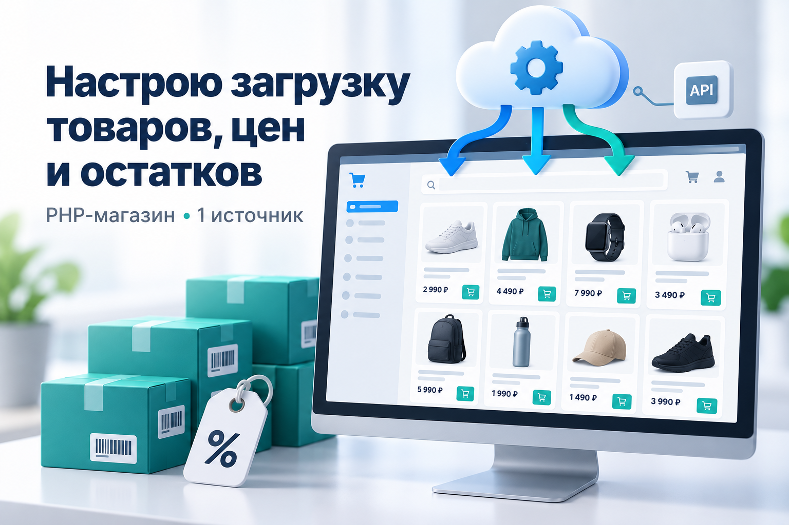
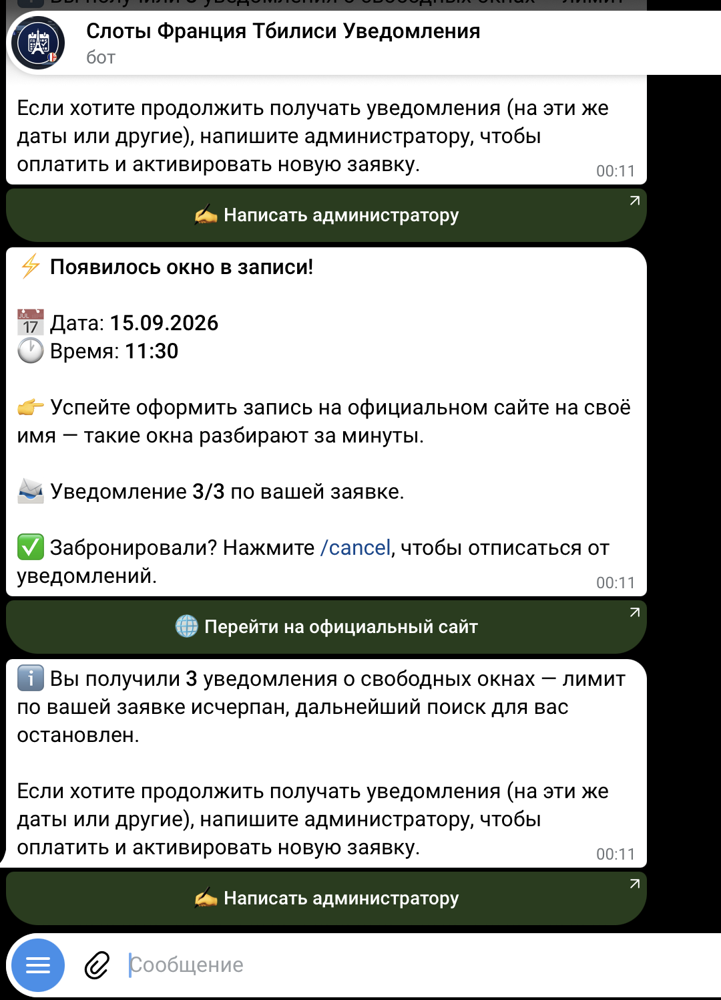

Интернет-магазин на PHP
Каталог, корзина, кабинет, коммерческие предложения и счета. Мой собственный проект.
Открыть магазин ↗САЙТЫ · БОТЫ · ДАННЫЕ
Помогаю представить бизнес в интернете и автоматизировать повседневную работу — от сайта до загрузки товаров и Telegram-уведомлений.
Обсудить мою задачу ↗Посмотреть проекты ↓
ЧЕМ МОГУ ПОМОЧЬ
Стартовая стоимость указана для ограниченного объёма. Точный состав работы и цену фиксируем до начала проекта.
СОБСТВЕННЫЕ ПРОЕКТЫ
Каталог, корзина, кабинет, коммерческие предложения и счета. Мой собственный проект.
Открыть магазин ↗Загрузка данных из разрешённых API и файлов, обновление каталога и контроль процесса в панели управления.

Бот сообщает о появлении свободного времени записи. Команды управления заявкой и ограничение количества уведомлений.
Показан пример работы. Доступность записи зависит от внешнего сервиса.ДАВАЙТЕ ЗНАКОМИТЬСЯ
Развиваю собственные интернет-проекты и помогаю с сайтами, автоматизацией и обработкой данных.
Мой практический опыт — собственный интернет-магазин, обновление каталога и Telegram-боты. У меня образование в области систем информатики, а также товароведения и экспертизы технически сложных товаров.
Сначала определяем конкретный результат, затем я готовлю решение, проверяю согласованный сценарий и передаю файлы с инструкцией.
КАК МЫ РАБОТАЕМ
Определяем объём, исходные материалы и ожидаемый результат.
Согласуем стоимость, срок и что именно входит в работу.
Вы смотрите результат, проверяем согласованные сценарии.
Файлы, исходный код и инструкция по использованию.
НАЧНЁМ С ВАШЕЙ ЗАДАЧИ
Напишите, как сейчас устроена работа и какой результат нужен. Можно приложить пример сайта или файла.
Telegram @lenvin7 ↗lenvin7@gmail.com